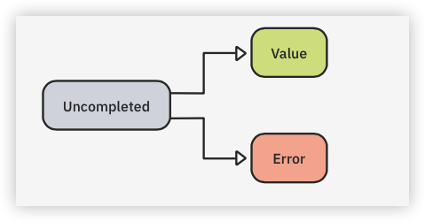

12 Futures¶
You’ve got dishes to wash, phone calls to return, clothes to dry and emails to write…aaaand you’ll get to them right after watching one more meme video. Why work so hard now when you’ve got so much time tomorrow?
You’re not the only one who’s good at procrastination. Dart is also an expert at rescheduling things for the future. In the previous chapter, you learned how Dart handles asynchronous code with its event loop. You also learned how to add tasks to the event and microtask queues using the Future class. In this chapter, you’ll shift your focus from the internal workings of the event loop and learn some practical uses of working with futures. These are asynchronous tasks that complete after some time.
Here are some common examples of tasks that Dart handles asynchronously:
- Making network requests.
- Reading and writing a file.
- Accessing a database.
With each of these, you express your intent to perform the task but have to wait for the task to complete. This chapter will teach you how to make network requests, but the process for handling all these asynchronous operations is similar.
The Future Type¶
Dart’s Future type is a promise to complete a task or give you a value in the future. Here’s the signature of a function that returns a future:
Future<int> countTheAtoms();
Future itself is generic; it can provide any type. In this case, the future is promising to give you an integer. In your code, if you called countTheAtoms, Dart would quickly return an object of type Future<int>. In effect, this is saying, “Hey, I’ll get back to you with that int sometime later. Carry on!”, in which case you’d proceed to run whatever synchronous code is next.
Behind the scenes, Dart has passed your request on to, presumably, an atom-counting machine, which runs independently of your main Dart isolate. There’s nothing on the event queue at this point, and your main thread is free to do other things. Dart knows about the uncompleted future, though. When the atom-counting machine finishes its work, it tells Dart, which puts the result, along with any code you gave it to handle the result, on the event queue. Dart says, “Sorry that took so long. Who knew there were 9.2 quintillion atoms in that little grain of sand! I’ll put your handling code at the end of the event queue. Give the event loop a few milliseconds, and then it’ll be your turn.”
Note
Because the largest an int can be on a 64 bit system is 9,223,372,036,854,775,807, or 2^63 − 1, it would be better to use BigInt as the return type of countTheAtoms. Although slower, BigInt can handle arbitrarily large numbers. When int values are too big at compile time, there’s a compile-time error. However, at runtime, they overflow — that is, 9223372036854775807 + 1 == -9223372036854775808.
States for a Future¶
Before a future completes, there isn’t anything you can do with it. But after it completes, it will have two possible results: the value you were asking for or an error. This all works out to three different states for a future:
- Uncompleted.
- Completed with a value.
- Completed with an error.

Example of a Future¶
One easy way to see a future in action is with the Future.delayed constructor. You saw an example of that in the last chapter, so the following is a review:
// 1
final myFuture = Future<int>.delayed(
// 2
Duration(seconds: 1),
// 3
() => 42,
);
Here’s what’s happening:
myFutureis of typeFuture<int>.- The first argument is a
Duration. After a delay of1second, Dart will add the anonymous function in the second argument to the event queue. - When the event loop gets to
() => 42, it will run that function in the main isolate, causing the function to return the integer42.
In the previous future, the value you want is the 42, but how do you get it? Your variable myFuture isn’t 42; it’s a future that’s a promise to return an int or an error. You can see that if you try to print myFuture:
print(myFuture);
Run that, and the result is:
Instance of 'Future<int>'
So how do you access the value? And what if the future completes with an error?
Getting the Results¶
There are two ways to get at the value after a future completes. One is with callbacks, and the other is with async-await.
Using Callbacks¶
As you learned in Chapter 2, “Anonymous Functions”, a callback is an anonymous function that will run after some event has completed. In the case of a future, there are three callback opportunities: then, catchError and whenComplete. You used then in the last chapter, but you’ll see how all three work now.
Replace the body of the main function with the following code:
print('Before the future');
final myFuture = Future<int>.delayed(
Duration(seconds: 1),
() => 42,
)
.then(
(value) => print('Value: $value'),
)
.catchError(
(Object error) => print('Error: $error'),
)
.whenComplete(
() => print('Future is complete'),
);
print('After the future');
A future will either give you a value or an error. If it completes with a value, you can get the value by adding a callback to the then method. The anonymous function provides the value as an argument so you can access it. On the other hand, if the future completes with an error, you can handle it in catchError. But regardless of whether the future completes with a value or an error, you can run any final code in whenComplete.
Run the code above to see these results:
Before the future
After the future
Value: 42
Future is complete.
If you worked carefully through Chapter 11, “Concurrency”, you weren’t surprised that Dart printed “After the future” before the future results. That print statement is synchronous, so it ran immediately. Even if the future didn’t have a one-second delay, it would still have to go to the event queue and wait for all the synchronous code to finish.
Using Async-Await¶
Callbacks are pretty easy to understand, but they can be hard to read, especially if you nest them. A more readable way to write the code above is using the async and await syntax. This syntax makes futures look much more like synchronous code.
Writing the Code¶
Replace the entire main function with the following:
// 1
Future<void> main() async {
print('Before the future');
// 2
final value = await Future<int>.delayed(
Duration(seconds: 1),
() => 42,
);
print('Value: $value');
print('After the future');
}
There are a few changes this time:
- If a function uses the
awaitkeyword anywhere in its body, it must return aFutureand add theasynckeyword before the opening curly brace. Usingasyncclearly tells Dart this is an asynchronous function and that the results will go to the event queue. Becausemaindoesn’t return a value, you useFuture<void>. - In front of the future, you added the
awaitkeyword. Once Dart seesawait, the rest of the function won’t run until the future completes. If the future completes with a value, there are no callbacks; you have direct access to that value. Thus, the type of thevaluevariable above isn’tFuture, butint.
Run the code above to see the following results:
Before the future
Value: 42
After the future
This time, “After the future” gets printed last. That’s because everything after the await keyword is sent to the event queue.
“What if the future returns an error, though?”
For that, use a try-catch block.
Handing Potential Errors¶
You learned about try-catch blocks in Chapter 10, “Error Handling”. Here’s what the future you wrote above looks like inside a try-catch block:
print('Before the future');
try {
final value = await Future<int>.delayed(
Duration(seconds: 1),
() => 42,
);
print('Value: $value');
} catch (error) {
print(error);
} finally {
print('Future is complete');
}
print('After the future');
The catch and finally blocks correspond to the catchError and whenCompletecallbacks you saw earlier. If the future completes with an error, Dart will immediately abort the try block and call the catch block. Error or not, Dart will always call the finally block.
Run the code above to see the following result:
Before the future
Value: 42
Future is complete
After the future
The future finished with a value, so Dart didn’t call the catch block.
Asynchronous Network Requests¶
In the examples above, you used Future.delayed to simulate a task that takes a long time. Using Future.delayed is useful during app development for this reason: You can implement an interface with a mock network request class to see how your UI will react while the app waits for a response.
As useful as Future.delayed is, though, eventually, you’ll need to implement the real network request class. The following example will show how to make an HTTP request to access a REST API. This example will use many concepts you’ve learned in the Dart Apprentice books.
Note
HTTP, or hypertext transfer protocol, is a standard way of communicating with a remote server. REST, or representational state transfer, is an architectural style that includes commands like GET, POST, PUT and DELETE. The API, or application programming interface, is similar in idea to the interfaces you made in Chapter 5, “Interfaces”. A remote server defines a specific API using REST commands, which allow clients to access and modify resources on the server.
Creating a Data Class¶
The web API you’ll use will return some data about a to-do list item. The data will be in JSON format. To convert that to a more usable Dart object, you’ll create a special class to hold the data. Unsurprisingly, many people call this a data class. Such classes usually don’t contain many methods because the data is the focus.
Add the following code below the main function:
class Todo {
Todo({
required this.userId,
required this.id,
required this.title,
required this.completed,
});
factory Todo.fromJson(Map<String, dynamic> jsonMap) {
return Todo(
userId: jsonMap['userId'] as int,
id: jsonMap['id'] as int,
title: jsonMap['title'] as String,
completed: jsonMap['completed'] as bool,
);
}
final int userId;
final int id;
final String title;
final bool completed;
@override
String toString() {
return 'userId: $userId\n'
'id: $id\n'
'title: $title\n'
'completed: $completed';
}
}
Here are a few notes:
- You could have also used a named constructor or a static method instead of a factory constructor for
Todo.fromJson. Review Dart Apprentice: Fundamentalsif you need a refresher on classes, constructors and static methods. - Rather than
dynamic, you could have writtenObject?. But Dart’s JSON decoding library returnsdynamicvalues, so it’s common to see people usedynamicin thefromJsoninput parameter.
Adding the Necessary Imports¶
The http package from the Dart team lets you make a GET request to a real server. Make sure your project has a pubspec.yaml file, then add the following dependency:
dependencies:
http: ^0.13.5
Save the file, and if necessary, run dart pub get in the terminal to pull the httppackage from Pub.
Then, at the top of the file with your main function, add the following imports:
import 'dart:convert';
import 'dart:io';
import 'package:http/http.dart' as http;
Here’s what each import is for:
- As you recall from Chapter 10, “Error Handling”, the
dart:convertlibrary gives youjsonDecode, a function for converting a raw JSON string to a Dart map. - The
dart:iolibrary hasHttpExceptionandSocketException, which you’ll use shortly. - The final import is the
httplibrary you just added topubspec.yaml. Note theas httpat the end. This isn’t necessary, but theaskeyword lets you prefix any functions from the library with the namehttp. You don’t need to call ithttp— any arbitrary name is fine. Feel free to change the name topinkElephantsif you so desire. Providing a custom name can be useful for avoiding naming conflicts with other libraries or functions.
Making a GET Request¶
Now that you have the necessary imports, replace your main function with the following code:
Future<void> main() async {
// 1
final url = 'https://jsonplaceholder.typicode.com/todos/1';
final parsedUrl = Uri.parse(url);
// 2, 3
final response = await http.get(parsedUrl);
// 4
final statusCode = response.statusCode;
if (statusCode != 200) {
throw HttpException('$statusCode');
}
// 5
final jsonString = response.body;
dynamic jsonMap = jsonDecode(jsonString);
// 6
final todo = Todo.fromJson(jsonMap);
print(todo);
}
There are a few new things here, so have a look at each of them:
- The URL address is for a server that provides an API that returns sample JSON for developers. It’s much like the type of API you would make as a backend for a client app.
Uri.parseconverts the raw URL string to a format thathttp.getrecognizes. - You use
http.getto make aGETrequest to the URL. ChangehttptopinkElephantsif that’s what you called it earlier.GETrequests are the same requests browsers make when you type a URL in the address bar. - Because it takes time to contact a server that might exist on another continent,
http.getreturns a future. Dart passes the work of contacting the remote server to the underlying platform, so you won’t need to worry about it blocking your app while you wait. Because you’re using theawaitkeyword, the rest of the main method will be added to the event queue when the future completes. If the future completes with a value, the value will be an object of typeResponse, which includes information from the server. - HTTP defines various three-digit status codes. A status code of
200meansOK— the request was successful, and the server did what you asked. On the other hand, the common status code of404means the server couldn’t find what you were asking for. If that happens, you’ll throw anHttpException. - The response body from this URL address includes a string in JSON format. You use
jsonDecodefrom thedart:convertlibrary to convert the raw JSON string into a Dart map. The type isdynamicbecause JSON strings are untyped by nature. You’re assuming that it’s a map, but theoretically, it might not be. You can do some extra type checking or error checking if you want to be sure. - Once you have a Dart
map, you can pass it into thefromJsonfactory constructor of yourTodoclass that you wrote earlier.
Make sure you have an internet connection, then run the code above. You’ll see a printout from your Todo object’s toString method:
userId: 1
id: 1
title: delectus aut autem
completed: false
The values of each field come from the remote server.
Handling Errors¶
A few things could go wrong with the code above, so you’ll need to be ready to handle any errors. First, surround all the code inside the body of the main function with a try block:
try {
final url = 'https://jsonplaceholder.typicode.com/todos/1';
// ...
}
Then, below the try block, add the following catch blocks:
on SocketException catch (error) {
print(error);
} on HttpException catch (error) {
print(error);
} on FormatException catch (error) {
print(error);
}
Here’s what each of the exceptions means:
SocketException: You’ll get this exception if there’s no internet connection. Thehttp.getmethod is the one to throw the exception.HttpException: You’re throwing this exception yourself if the status code isn’t200OK.FormatException:jsonDecodethrows this exception if the JSON string from the server isn’t in proper JSON format. It would be unwise to blindly trust whatever the server gives you.
Remember, it’s good to be specific in your error-catching. That way, if a different kind of error comes up that you weren’t expecting, your app will crash. That allows you to fix the error right away instead of silently ignoring it, as a generic catch block would do.
Testing a Socket Exception¶
Turn off your internet and rerun the code. You should see the following output:
SocketException: Failed host lookup: 'jsonplaceholder.typicode.com'
In an actual app, instead of just printing a message to the console, you’d probably want to remind the user to turn on their internet.
Turn your internet back on and proceed to the next test.
Testing an HTTP Exception¶
Change the URL to the following:
final url = 'https://jsonplaceholder.typicode.com/todos/pink-elephants';
Unless https://jsonplaceholder.typicode.com has recently added the /pink-elephantsURL endpoint, you’ll get a 404 when you rerun the code:
HttpException: 404
In a real app, you’d inform the user that whatever they were looking for isn’t available.
Restore the URL as it was before:
final url = 'https://jsonplaceholder.typicode.com/todos/1';
You’ve already had practice throwing a FormatException in Chapter 10, “Error Handling”, so you can skip that test.
Nice work! You now know how to get the value from a future and handle any errors.
Exercise¶
- Use the
Future.delayedconstructor to provide a string after two seconds that says, “I am from the future.” - Create a
Stringvariable namedmessagethat awaits the future to complete with a value. - Surround your code with a
try-catchblock.
Creating a Future From Scratch¶
In the network request example, you simply used the future that the http library provided for you. Sometimes, though, you have to create a future from scratch. One example is when you implement an interface that requires a future.
In Chapter 5, “Interfaces”, you wrote the following interface:
abstract class DataRepository {
double? fetchTemperature(String city);
}
fetchTemperature is a synchronous function. However, a real-world app would need to fetch the temperature from a database or web server, so a better interface would return a Future. Add the following modified interface to your project:
abstract class DataRepository {
Future<double> fetchTemperature(String city);
}
Now, fetchTemperature returns a type of Future<double> rather than just double?. There’s no need for the nullable type anymore. The only reason you allowed null in the first place was as a default value if there was a problem fetching the temperature. Now that you’re using a future, you can just throw an exception if you can’t get the temperature.
The problem now is, how do you implement this interface?
If you try to implement it like so:
class FakeWebServer implements DataRepository {
@override
Future<double> fetchTemperature(String city) {
return 42.0;
}
}
Dart gives you the following compile-time error:
A value of type 'double' can't be returned from the method 'fetchTemperature' because it has a return type of 'Future<double>'.
So how do you create a future so you can return it?
There are a few possibilities.
Using the Future Constructor¶
The most direct way of creating a future is to use one of the constructors of Future.
Unnamed Constructor¶
Replace your fetchTemperature implementation in FakeWebServer with the following:
@override
Future<double> fetchTemperature(String city) {
return Future(() => 42.0);
}
This time fetchTemperature returns a future that always completes with a value of 42.0.
Completing With a Value¶
Another way to specify that you want the future to complete with a value is to use the Future.value named constructor. Replace fetchTemperature in FakeWebServerwith the new form:
@override
Future<double> fetchTemperature(String city) {
return Future.value(42.0);
}
Future.value(42.0) always completes with a value of 42.0.
Completing With an Error¶
Remember that a future can complete with either a value or an error. If you want to return a future that completes with an error, use the Future.error named constructor.
Replace fetchTemperature with the following implementation:
@override
Future<double> fetchTemperature(String city) {
return Future.error(ArgumentError("$city doesn't exist."));
}
When this future completes, it’ll give an argument error. This is still your FakeWebServer implementation. In a real web server implementation, you would only return the error if there was a problem with the HTTP request.
Giving a Delayed Response¶
If you were making a Flutter app, it might be nice to wait a while before the future completes so you can see the circular spinner moving for a second or two in the UI. For that, use the Future.delayed constructor you’ve seen previously.
Replace fetchTemperature in FakeWebServer with the new implementation:
@override
Future<double> fetchTemperature(String city) {
return Future.delayed(
Duration(seconds: 2),
() => 42.0,
);
}
This future will complete after two seconds and then return a value.
If you want to return an error instead, throw the error in the callback:
@override
Future<double> fetchTemperature(String city) {
return Future.delayed(
Duration(seconds: 2),
() => throw ArgumentError('City does not exist.'),
);
}
This causes the future to complete with an argument error after two seconds.
Using an Async Method¶
In addition to using the Future constructors, an easy way to create a future from scratch is to add the async keyword.
Replace your fetchTemperature implementation in FakeWebServer with the following:
@override
Future<double> fetchTemperature(String city) async {
return 42.0;
}
The function directly returns the value 42.0. But because it contains the asynckeyword, Dart automatically makes the return value a future.
Using a Completer¶
The previous solutions are fine for most scenarios. However, if you need maximum flexibility, you can use the Completer class to create a future.
Completer is a part of the dart:async library, so first import that at the top of your project file:
import 'dart:async';
Then, replace your fetchTemperature implementation in FakeWebServer with the following:
@override
Future<double> fetchTemperature(String city) {
// 1
final completer = Completer<double>();
if (city == 'Portland') {
// 2
completer.complete(42.0);
} else {
// 3
completer.completeError(ArgumentError("City doesn't exist."));
}
// 4
return completer.future;
}
Here are the steps you take to use the completer:
- Create a new instance of
Completer. The future’s return value is adouble, so the completer’s generic type is alsodouble. - You control whether the future will complete with a value or an error. If you want the future to complete with a value, then call
completewith the value as a parameter. - Alternatively, call
completeErrorif you want to complete the future with an error. - Return the future. In this example, the future has already finished by the time you’ve reached this point because you’re calling
completeandcompleteErrorsynchronously. You could wrap them inFuture.delayedif you wanted to see an example of this method returning an uncompleted future.
Testing Your Future Out¶
Now that you’ve made your future, you can use it as you would any other future.
Replace main with the following code:
Future<void> main() async {
final web = FakeWebServer();
try {
final city = 'Portland';
final degrees = await web.fetchTemperature(city);
print("It's $degrees degrees in $city.");
} on ArgumentError catch (error) {
print(error);
}
}
You’re awaiting fetchTemperature in this async function. Because fetchTemperaturemight throw an argument error, you wrap it in a try block.
Run the code to see the result:
It's 42.0 degrees in Portland.
That completes the chapter. Knowing how to use futures opens up a whole new world to you. There are many public web APIs you can access to gather data for your apps. Your future has arrived!
Challenges¶
Before moving on, here are some challenges to test your knowledge of futures. It’s best if you try to solve them yourself, but if you get stuck, solutions are available in the challenge folder of this chapter.
Challenge 1: Spotty Internet¶
Implement FakeWebServer.fetchTemperature so it completes sometimes with a value and sometimes with an error. Use Random to help you.
Challenge 2: What’s the Temperature?¶
Use a real web API to get the temperature and implement the DataRepositoryinterface from the lesson.
Free Code Camp has a weather API that takes the following form:
https://fcc-weather-api.glitch.me/api/current?lat=45.5&lon=-122.7
You can change the numbers after lat and lon to specify latitude and longitude for the weather.
Complete the following steps to find the weather:
- Convert the URL above to a Dart
Uriobject. - Use the
httppackage to make a GET request. This will give you aResponseobject. - Use
response.bodyto get the JSON string. - Decode the JSON string into a Dart map.
- Print the map and look for the temperature.
- Extract the temperature and the city name from the map.
- Print the weather report as a sentence.
- Add error handling.
Challenge 3: Care to Make a Comment?¶
The following link returns a JSON list of comments:
https://jsonplaceholder.typicode.com/comments
Create a Comment data class and convert the raw JSON to a Dart list of type List<Comment>.
Key Points¶
- Using a future, which is of type
Future, tells Dart that it may reschedule the requested task on the event loop. - When a future completes, it will contain either the requested value or an error.
- A method that returns a future doesn’t necessarily run on a different process or thread. That depends entirely on the implementation.
- You can handle errors from futures with callbacks or
try-catchblocks. - You can create a future using a named or unnamed
Futureconstructor, returning a value from anasyncmethod or using aCompleter.
Where to Go From Here?¶
If you enjoyed making HTTP requests to access resources from a remote server, you should consider server-side development with Dart. Using a single language for both the front end and the back end is nothing short of amazing. No cognitive switching is required because everything you’ve learned in this book also applies to writing Dart code on the server.